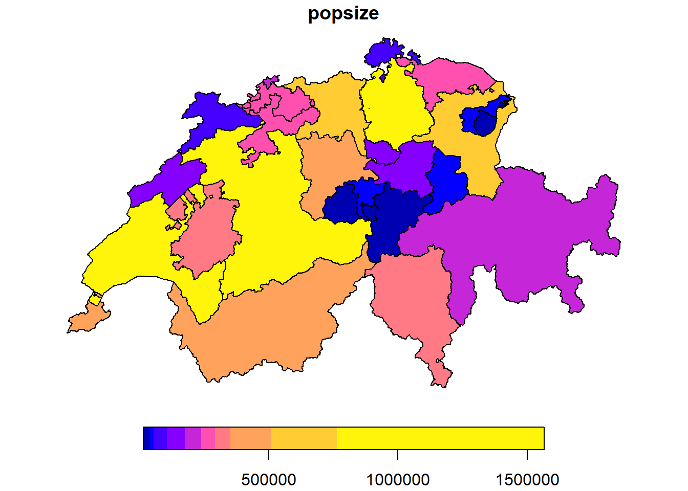
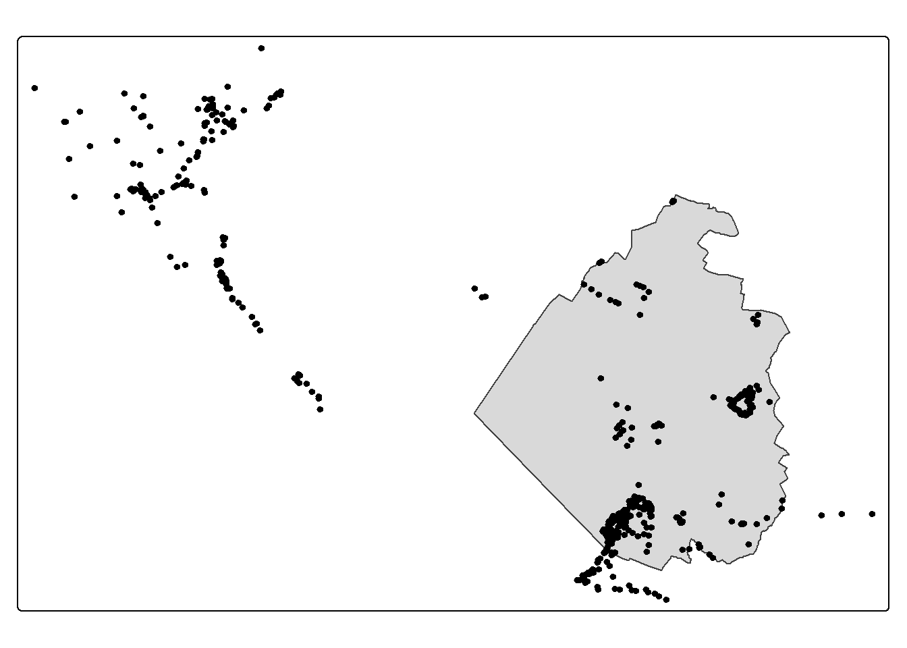
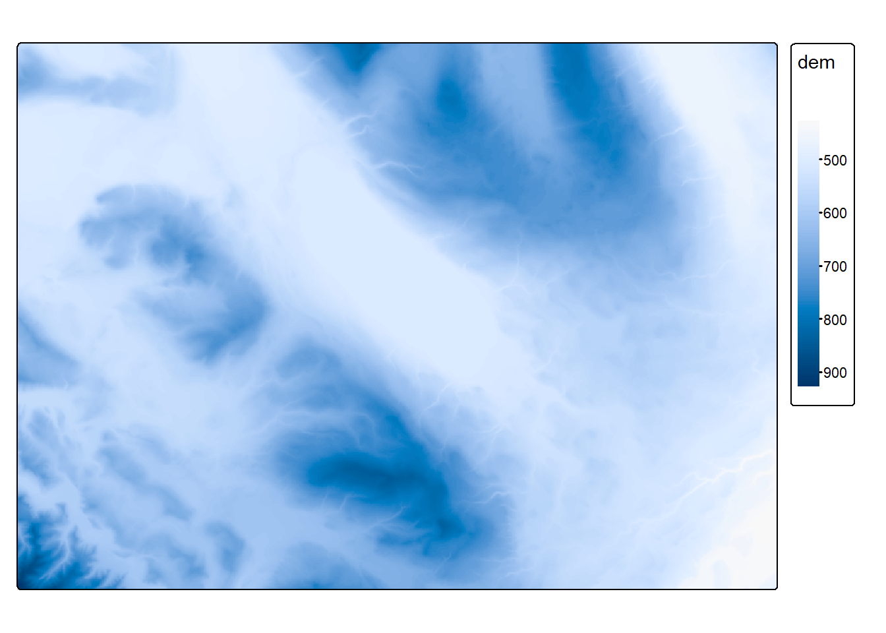
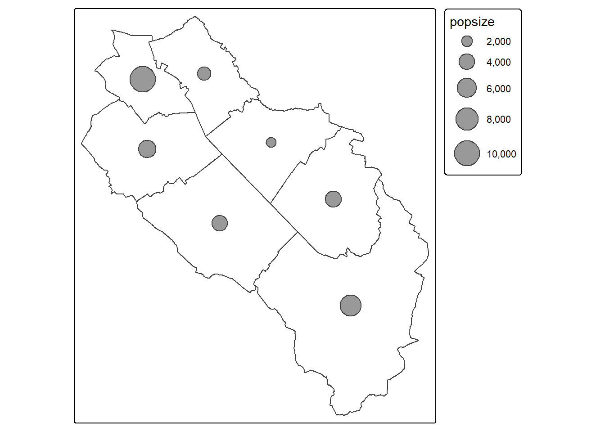
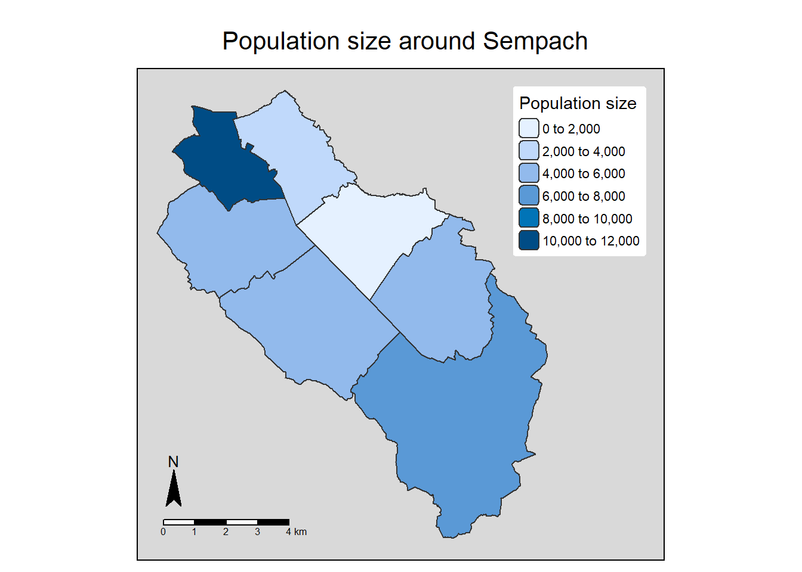
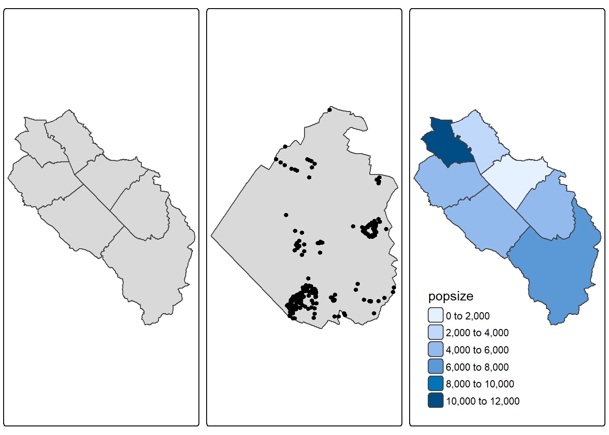
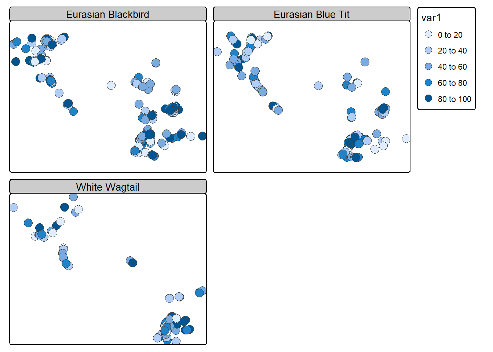
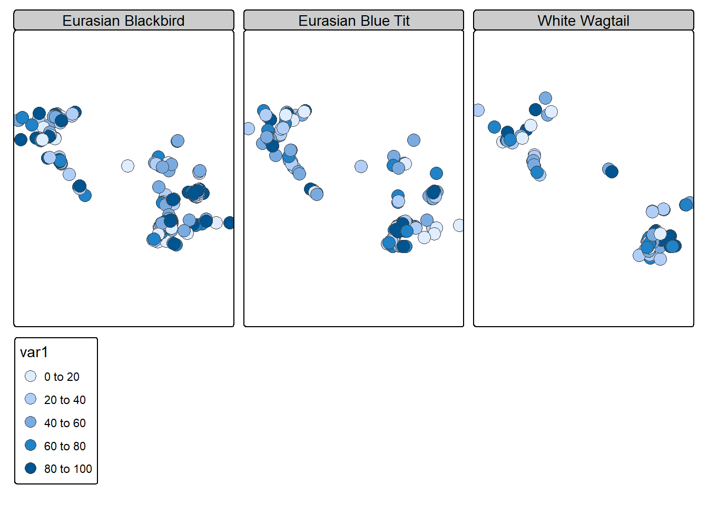

library(sf)
library(terra)
library(tmap)
muni <- st_read("data/geodata.gpkg", "municipalities", quiet = TRUE)
obs <- read.csv("data/observations.csv")
obs <- st_as_sf(obs, coords = c("x", "y"), crs = "EPSG:2056")
soi <- st_as_sfc("POINT(2657271 1219754)", crs = "EPSG:2056")
elev <- rast("data/dem.tif")7 Static maps
Since a few years, it is possible to make really attractive maps using only R. For example, almost of the maps of the Swiss Breeding Bird Atlas 2013-16 were produced in R. Standard GIS software will still provide more advanced cartographic tools but R will be powerful enough for most cases. Moreover you definitely have a big advantage in terms of reproducibility. In this part we will first look at how we can use sf and terra standard plotting functions to make simple maps. Then we’ll use the package tmap which provides interesting tools to make more complex maps in a more or less intuitive way.
7.1 Basic maps
As we’ve seen in some previous examples, the basic function to make maps is simply the plot() function. Both sf and terra extend this function to support vector and raster data sets. When we create maps, we usually consider the different data sets as layers that we combine to produce a nice output. This is why we will often use the add = TRUE argument in the plot() function. Most of the standard arguments provided by the standard plot() function (such as pch, lwd, cex, etc.) are also supported for sf objects. If you want to see all the additional parameters, you can check the help files (?sf::plot and ?terra::plot). Here’s a simple example:
plot(st_geometry(muni), col = "grey90", border = "grey50", lty = 3)
plot(st_union(muni), col = NA, border = "grey50", lwd = 2, add = TRUE)
plot(obs["name"], pch = 16, cex = 2, add = TRUE)When we have polygons with some continuous attribute, we can create what is called a choropleth map. These maps are often used to represent spatially variables like population densities or per-capita income.
cantons <- st_read("data/geodata.gpkg", "cantons", quiet = TRUE)
par(mfrow = c(1, 3))
plot(cantons["popsize"])plot(cantons["popsize"], nbreaks = 15)plot(cantons["popsize"], breaks = "quantile")
If you need good colors for your maps, you should use the RColorBrewer and viridis packages. These were designed by color specialists and are highly recommended. For RColorBrewer you can visualize the existing color palettes on the following website: https://colorbrewer2.org.
Plotting raster data is very similar
plot(elev, breaks = 15, col = hcl.colors(15))You need to be extra cautious when using data sets with different CRSs. Let’s have a look at this example:
temp_poly <- st_buffer(soi, 2000000)
plot(st_geometry(World))
plot(temp_poly, col = "grey90", add = TRUE)
plot(st_transform(temp_poly, 4326), col = "grey90", add = TRUE)7.2 World maps and globes
As we’ve seen before, the default projection that is used to plot data with a geographic CRS is not ideal. The distortions are large (especially near the poles) and the map will appear elongated. If you want to plot world maps, I recommend using either the Robinson projection, which was designed to be aesthetically pleasing, or the Equal-Earth projection, which has the advantage of having equal areas. The Winkel tripel projection can also be a good choice. We need to include a graticule to display the limits of the world map.
grat <- st_geometry(st_graticule(lon = seq(-180, 180, by = 40), lat = seq(-91, 91, by = 30)))
plot(st_transform(st_geometry(World), "ESRI:54030"))
plot(st_transform(grat, "ESRI:54030"), col = "grey50", add = TRUE)plot(st_transform(st_geometry(World), "EPSG:8857"))
plot(st_transform(grat, "EPSG:8857"), col = "grey50", add = TRUE)If you want to plot a 2D globe, you can use the orthographic projection. You can center the globe on one point by modifying the lat_center and lon_center variables in the following code.
library(s2)
options(s2_oriented = TRUE) # don't change orientation of the geometries (since the orientation is already correct)
lat_center <- 40
lon_center <- -10
earth <- st_as_sfc("POLYGON FULL", crs = "EPSG:4326")
# If you specify the first argument (x = earth), some lines will be missing after clipping
grat <- st_graticule(lon = seq(-180, 180, by = 20), lat = seq(-90, 90, by = 30))
countries <- st_as_sf(s2_data_countries())
oceans <- st_difference(earth, st_union(countries))
# Clip the data using the visible half (otherwise problems can happen with the orthographic projection, for example countries with vertices in the non-visible part will disappear)
buff <- st_buffer(st_as_sfc(paste0("POINT(", lon_center, " ", lat_center, ")"), crs = "EPSG:4326"), 9800000) # visible half
countries_clipped <- st_intersection(buff, countries)
oceans_clipped <- st_intersection(buff, oceans)
grat_clipped <- st_intersection(buff, grat)
projstring <- paste0("+proj=ortho +lat_0=", lat_center, " +lon_0=", lon_center)
plot(st_transform(oceans_clipped, projstring), col = "lightblue")
plot(st_transform(countries_clipped, projstring), col = NA, add = TRUE)
plot(st_transform(grat_clipped, projstring), col = "grey50", add = TRUE)
Note
You probably remember my warning about proj4strings, and that you should not use them for projections. I’m actually using one of these strings here to define the orthographic projection. Fortunately, for global maps, the inaccuracies are negligible. Moreover, it is easier to define the latitude and longitude of origin.
7.3 Exporting high quality maps
Using the default R graphic device doesn’t always produce good quality maps, especially if you need to use them for publications. If you want high quality maps you can use the PNG cairo graphic device. If you’re producing maps containing orthophotos or topographic maps, you should use the JPEG cairo device instead.
png("export/map.png", width = 4200, height = 3000, res = 300, type = "cairo")
plot(st_geometry(muni), col = "grey90", border = "grey50", lty = 3)
plot(st_union(muni), col = NA, border = "grey50", lwd = 2, add = TRUE)
plot(obs["name"], pch = 16, cex = 2, add = TRUE)
dev.off()When you include topographic maps or orthophotos in you maps, you might get disappointing results. By default, terra is using 500000 pixels to plot your map. If one of the layers has more pixels, terra will randomly sample them which can give the impression of a poor resolution. You can increase this number by using the maxcell argument. Be ready to wait a bit if you use really high values (small tip: to get the maximal resolution, use Inf).
par(mfrow = c(1, 2))
plot(ortho, maxcell = 10000)
plot(ortho, maxcell = Inf)
7.4 Swiss map with hillshade
If you need a nice Swiss map, you can use the following data and code snippet. The data and the hillshade were produced by Swisstopo and you should add the copyright if you use them. Note how the hillshade is customized and how the rivers get larger.
# Import cartographic elements
lakes <- st_read("data/swiss_carto.gpkg", "lakes", quiet = TRUE)
rivers <- st_read("data/swiss_carto.gpkg", "rivers", quiet = TRUE)
border <- st_read("data/swiss_carto.gpkg", "border", quiet = TRUE)
# Define the width of the rivers which will be used on the maps (rescale the attribute "thickness" between 0.5 and 2)
riverswidth <- as.numeric(gsub("[^0-9.]", "", rivers$thickness))
width_std <- (riverswidth - min(riverswidth)) * (2 - 0.5) / (max(riverswidth) - min(riverswidth)) + 0.5
# Import hillshade (copyright swisstopo)
hillshade <- rast("data/hillshade.tif")
# Crop hillshade with the extent of Switzerland (add a small buffer to avoid clipping the map in some places)
hillshade <- crop(hillshade, ext(st_union(border, lakes)) + 2000)
# Mask hillshade
hillshade <- mask(hillshade, border)
# Simulate 70% opacity
hillshade <- 255 - 0.7*(255 - hillshade)
# Plot
plotRGB(hillshade, smooth = TRUE, mar = c(1, 1, 1, 1), axes = FALSE, legend = FALSE, maxcell = Inf)
plot(st_geometry(border), col = NA, border = rgb(130, 130, 130, maxColorValue = 255), add = TRUE, lwd = 3)
plot(st_geometry(rivers), col = rgb(69, 138, 230, maxColorValue = 255), add = TRUE, lwd = width_std)
plot(st_geometry(lakes), col = rgb(162, 197, 243, maxColorValue = 255), border = rgb(69, 138, 230, maxColorValue = 255), add = TRUE)
7.5 tmap
If you want to make more complex maps, you can still achieve almost everything using standard plotting procedures but you’ll spend a lot of time trying to hack everything. If you’re a ggplot2 user, you can of course use it with spatial data. However there’s another package, tmap, that is similar to ggplot2 but more intuitive for maps and more GIS friendly. The tmap package is also based on the grammar of graphics approach that separates data and aesthetics.
Important
This tutorial was written for tmap version 4.x. It will not work with older versions of tmap.
7.5.1 Mapping layers
To create a map with tmap, you first need to specify the data set you want to plot with the tm_shape() function. This function will accept the usual spatial objects created by sf and terra (and stars). Then you need to tell tmap how to represent the data using specific map layer functions (e.g. tm_polygons(), tm_dots()). An example should make things a bit clearer.
tm_shape(muni) + tm_polygons()To adapt the symbology (color, line width, etc.) of the layers, we can specify visual variables (also called aesthetic mappings) inside the map layer functions. For polygons (and points), we use the fill variable to change the fill color of the features and the col variable to change the border color. You can also specify opacity with the variables fill_alpha and col_alpha. For line width and type, we use the standard lwd and lty variables. For lty you can use either a number from 0 to 6 or the corresponding character strings: blank, solid, dashed, dotted, dotdash, longdash or twodash).
tm_shape(muni) + tm_polygons(fill = "lightgreen", col = "darkgreen", lwd = 2, lty = "dotted")Until now we only had one layer for one data set, but one data set can easily be represented by several layers. We simply need to add other map layer functions. Let’s improve the previous example by adding centroids and labels for each municipality (the ymod variable is adding a vertical offset).
tm_shape(muni) + tm_polygons() + tm_dots(size = 1.5) + tm_text("name", ymod = 1, col = "navy")
One nice feature of the package is that you can save map objects and modify them later
map1 <- tm_shape(muni) + tm_polygons()
map1 + tm_dots(size = 1.5) + tm_text("name", ymod = 1, col = "navy")If you want to plot several data sets on the same map, you need to use tm_shape() for each data set. Of course, you will also need to use at least one map layer function for each object inside a tm_shape() function to define how the data will be plotted.
tm_shape(muni) + tm_borders(col = "black", lwd = 2) +
tm_shape(streets) + tm_lines(col = "grey50", lwd = 0.5) +
tm_shape(obs) + tm_dots(size = 0.4, fill = "navy")By default, tmap is using the first tm_shape() function to define the extent (and the CRS) of the map. It will referenced as the “main” shape. If you need to define your extent using another data set, you can add the is.main = TRUE argument to the desired tm_shape() function.
tm_shape(sempach) + tm_polygons() + tm_shape(obs) + tm_dots()tm_shape(sempach) + tm_polygons() + tm_shape(obs, is.main = TRUE) + tm_dots()
If your spatial objects are using different CRSs, tmap will use the CRS of the object inside the first tm_shape() function for the map and automatically reproject the data sets used in the following tm_shape() functions.
tm_shape(World) + tm_polygons() + tm_shape(st_buffer(soi, 2000000)) + tm_borders(col = "red", lwd = 2)We’re not limited to vector data, tmap can easily plot SpatRaster objects (and also rasters coming from the stars package). We just need to combine tm_shape() with tm_raster() or tm_rgb() if you have RGB multiband rasters. Internally tmap is using the stars package to process rasters, therefore an internal conversion is happening for SpatRaster objects. By default rasters will be classified, if you want a continuous map, you can add the col.scale = tm_scale_continuous() argument to the tm_raster() function. You can of course combine vector and raster data.
tm_shape(elev) + tm_raster()tm_shape(elev) + tm_raster(col.scale = tm_scale_continuous())
If you have a large raster, tmap will downsample it to gain speed. If you need the full resolution, you can change the raster.max_cells option using the tmap_options() function (this will stay like this until you close R or change the option again).
tmap_options(raster.max_cells = 10000)
tm_shape(ortho) + tm_rgb()SpatRaster object downsampled to 85 by 119 cells.tmap_options(raster.max_cells = Inf)
tm_shape(ortho) + tm_rgb()
Tip
The tmap package is extremely powerful and allows making complex maps. However the number of options is really large and it is easy to feel a bit lost. Fortunately tmap also provides the qtm() function for quick mapping with sensible defaults. You can also combine data sets with repeated qtm() calls.
qtm(muni)
qtm(muni) + qtm(obs, fill = "navy")7.5.2 Choropleth maps
Producing a choropleth map is extremely easy with tmap. You just need to specify the attribute name inside the tm_polygons() function using the fill argument. This is called a data variable. The legend is automatically added.
tm_shape(muni) + tm_polygons(fill = "popsize")Changing the classification method is also possible by changing the scale of the visual variable (not to be confused with the scale of the map). In this context, a scale defines how to map the data values to visual values. Since you want to change the fill color of the polygons, you need to use the fill.scale argument. This argument expects a function that will tell tmap how to map the data. Here we use the generic tm_scale() function which will automatically choose an appropriate scaling function based on the data type and the visual variable. The most important scaling functions are: intervals (tm_scale_intervals()), continuous values (tm_scale_continuous()) and categorical values (tm_scale_categorical() and tm_scale_ordinal()). A lot more are available… If you already know which scaling function you need, I’d recommend using the appropriate one directly, instead of relying too much on tm_scale().
You can for example change the number of breaks used for the color fill with the n argument.
tm_shape(muni) + tm_polygons(fill = "popsize",
fill.scale = tm_scale(n = 10))You can also specify the breaks manually with the breaks argument.
tm_shape(muni) + tm_polygons(fill = "popsize",
fill.scale = tm_scale(breaks = c(0, 3000, 5000, 11000)))It is of course also possible to change the algorithm used to define the breaks by changing the style argument inside the scaling function. By default tmap uses the pretty algorithm but you can also use quantile, equal, sd, log10_pretty and many more.
tm_shape(muni) + tm_polygons(fill = "popsize",
fill.scale = tm_scale(style = "quantile"))The logic is similar if you want to modify the legend. Since you want to modify the legend for the fill color, you need to use the fill.legend argument. This argument expects a function that will tell tmap how to draw the legend. Here we use the tm_legend() function, the first argument is the legend title.
tm_shape(muni) + tm_polygons(fill = "popsize",
fill.legend = tm_legend("Population size"))You can easily map several attributes in the same plotting window.
muni$area <- st_area(muni)
tm_shape(muni) + tm_polygons(fill = c("popsize", "area"))The default color palettes used by tmap are quite good but sometimes they won’t be appropriate. As we’ve seen earlier, the RColorBrewer and viridis packages provide really good color palettes. The cols4all1 package provides a nice function to visualize most of the palettes available in tmap: c4a_gui()
cols4all::c4a_gui()Changing the color fill is a bit different with choropleth maps since the fill variable is already used by the attribute name. With tmap, you do that inside the scaling function using the values argument (the name of this argument is a bit confusing in this case, but do not forget that scaling functions are also used for other visual variables such as line type or width). You can easily reverse the color palette by putting a - in front of the palette name.
tm_shape(muni) + tm_polygons(fill = "popsize",
fill.scale = tm_scale(values = "viridis"),
fill.legend = tm_legend("Population size"),
col = "white", lwd = 0.5)tm_shape(muni) + tm_polygons(fill = "popsize",
fill.scale = tm_scale(values = "-viridis"),
fill.legend = tm_legend("Population size"),
col = "white", lwd = 0.5)The next example is not a choropleth map, but it shows you another way to plot a continuous variable on a map. The argument values.scale inside the scaling function is used to scale the numerical values (otherwise the bubbles would be too small).
tm_shape(muni) + tm_borders() + tm_bubbles(size = "popsize",
size.scale = tm_scale(values.scale = 2))
7.5.3 Customizing layout
We can include extra objects in our map, such as titles, scale bars or north arrows. Each element has a position argument. In the next example we also include some styling using the tm_style() function. Currently 8 styles are available (have a look at the help file). We finally use the tm_layout() function to increase the right margin and draw a frame with sharp corners. For margins (specified as bottom, left, top, right), the units are relative to the map frame, so 0.05 means 5 percent of the frame height.
tm_shape(muni) + tm_polygons(fill = "popsize",
fill.legend = tm_legend(title = "Population size",
position = c("right", "top"),
frame = FALSE)) +
tm_compass(position = c("left", "bottom")) +
tm_scalebar(breaks = c(0, 1, 2, 3, 4), position = c("left", "bottom")) +
tm_title("Population size around Sempach", position = tm_pos_out("center", "top", "center")) +
tm_style("grey") +
tm_layout(inner.margins = c(0.05, 0.05, 0.05, 0.3), frame.r = 0)
In the next example we customize two maps in the same plotting window. We also use the tm_title() function to add nicer titles and the tm_credits() function to add some copyright information. Note the difference when using lowercase vs. uppercase for the positioning of the map components. We also tell tmap to remove the automatic title panels using the panel.show = FALSE argument inside the tm_layout() function. Lastly, note how we change the colors and the title of the legends for the two maps using list objects, and the use of an expression to properly display the units. The meta.margins inside tm_layout() is needed when using version 4.1 of tmap, otherwise the margins are suboptimal (this is a bug that should be corrected in the next version).
tm_shape(muni) + tm_polygons(fill = c("popsize", "area"),
fill.scale = list(tm_scale(values = "brewer.reds"), tm_scale(values = "brewer.blues")),
fill.legend = list(tm_legend("Population size"), tm_legend(expression("Area [m"^2*"]")))) +
tm_title(c("Population size", "Area"), size = 1.1, position = c("right", "top")) +
tm_credits("Data © swisstopo", position = c("LEFT", "BOTTOM")) +
tm_layout(panel.show = FALSE, meta.margins = c(0.3, 0, 0, 0))Having multiple maps on the same plot can be achieved using the tmap_arrange() function. First create your maps and store them in tmap objects, then use them with tmap_arrange(). This function is especially useful since the usual par(mfrow) trick doesn’t work with tmap objects.
map1 <- tm_shape(muni) + tm_polygons()
map2 <- tm_shape(sempach) + tm_polygons() + tm_shape(obs_in_sempach) + tm_dots()
map3 <- tm_shape(muni) + tm_polygons(fill = "popsize", fill.legend = tm_legend(position = c("left", "bottom"), frame = FALSE))
tmap_arrange(map1, map2, map3, nrow = 1)
If you need multiple maps with a common legend, you should use the functions tm_facets_wrap() or tm_facets_stack(), depending on the layout you want. The function tm_facets() will decide which one to use automatically based on your data. Facets can even be defined for two or three dimensions using the tm_facets_grid() function. In the next example we first generate a fake continuous attribute and then automatically create separate maps for each bird species, using the new attribute for the legend.
obs$var1 <- runif(nrow(obs), 1, 100)
tm_shape(obs) + tm_symbols(fill = "var1") + tm_facets_wrap("name")
tm_shape(obs) + tm_symbols(fill = "var1") + tm_facets_stack("name")
7.5.4 World maps and globes
The default projection that is used to plot data with a geographic CRS in tmap is the same as before. We’ve seen that it’s not ideal since the distortions are large (especially near the poles) and the map will appear elongated.
tm_shape(World) + tm_polygons("HPI") +
tm_title("Happy Planet Index")As in the previous section, I recommend using either the Robinson projection, which was designed to be aesthetically pleasing, or the Equal-Earth projection, which has the advantage of having equal areas. The Winkel tripel projection can also be a good choice. With tmap, you can use the tm_crs() function to define the projection that will be applied to the map. For world maps, you can use the argument earth_boundary = TRUE inside the tm_layout() function to display the earth boundary (this is only available for a few global projections, such as the ones we’re using). We also remove the map frame using frame = FALSE.
map <- tm_shape(World) + tm_polygons(fill = "HPI") +
tm_title("Happy Planet Index") +
tm_layout(earth_boundary = TRUE, frame = FALSE)
# Equal-Earth
map + tm_crs("EPSG:8857")# Robinson
map + tm_crs("ESRI:54030")# Winkel tripel
map + tm_crs("+proj=wintri")
Note
You probably remember my warning about proj4strings, and that you should not use them for projections. I’m actually using one of these strings here to define the Winkel tripel projection. The main reason is that there is no EPSG (or ESRI) number for this CRS. Moreover, for global maps, the inaccuracies are negligible.
You can also use the tm_style("natural") function to specify a style adapted for world maps. Here’s an example using the Robinson projection.
tm_shape(World) + tm_polygons(fill = "HPI") +
tm_title("Happy Planet Index") +
tm_layout(earth_boundary = TRUE, frame = FALSE) +
tm_style("natural") +
tm_crs("ESRI:54030")You can easily add graticule lines to your world map. We first need to generate them using the st_graticule() function (from the sf package). In theory you could use the tmap function tm_graticules() but unfortunately, depending on the projection, the lines don’t go all the way to the poles.
grat <- st_graticule(lon = seq(-180, 180, by = 20), lat = seq(-90, 90, by = 30))
tm_shape(World) +
tm_polygons(fill = "HPI") +
tm_shape(grat) +
tm_lines(col = "grey70") +
tm_title("Happy Planet Index") +
tm_layout(earth_boundary = TRUE, frame = FALSE) +
tm_crs("ESRI:54030")If you want to plot a 2D globe, you can use the orthographic projection (which is also using a proj4string). You can center the globe on one point by modifying the lat_center and lon_center variables in the following code.
lat_center <- 40
lon_center <- -10
projstring <- paste0("+proj=ortho +lat_0=", lat_center, " +lon_0=", lon_center)
tm_shape(World, crs = projstring, bbox = "FULL") +
tm_polygons() +
tm_graticules(n.x = 20, n.y = 10, col = "black", lwd = 0.5, labels.show = FALSE) +
tm_style("natural") +
tm_xlab("Longitudes", size = 1.1) + tm_ylab("Latitudes", size = 1.1)Or you can use the code we used in the previous section to create the data, but this time we will use tmap to plot everything.
options(s2_oriented = TRUE) # don't change orientation of the geometries (since the orientation is already correct)
earth <- st_as_sfc("POLYGON FULL", crs = "EPSG:4326")
# If you specify the first argument (x = earth), some lines will be missing after clipping
grat <- st_graticule(lon = seq(-180, 180, by = 20), lat = seq(-90, 90, by = 30))
countries <- st_as_sf(s2_data_countries())
oceans <- st_difference(earth, st_union(countries))
# Clip the data using the visible half (otherwise problems can happen with the orthographic projection, for example countries with vertices in the non-visible part will disappear)
buff <- st_buffer(st_as_sfc(paste0("POINT(", lon_center, " ", lat_center, ")"), crs = "EPSG:4326"), 9800000) # visible half
countries_clipped <- st_intersection(buff, countries)
oceans_clipped <- st_intersection(buff, oceans)
grat_clipped <- st_intersection(buff, grat)
tm_shape(oceans_clipped) +
tm_polygons(fill = "lightblue") +
tm_shape(countries_clipped) +
tm_borders() +
tm_shape(grat_clipped) +
tm_lines(col = "grey50") +
tm_crs(projstring)
7.5.5 Saving maps
Saving maps is trivially easy using the tmap_save() function. The format is automatically recognized using the file name extension. You can also specify the height, width and resolution of the map.
map1 <- tm_shape(muni) + tm_polygons()
tmap_save(map1, "mymap.png")7.6 mapsf
On the to-do list…